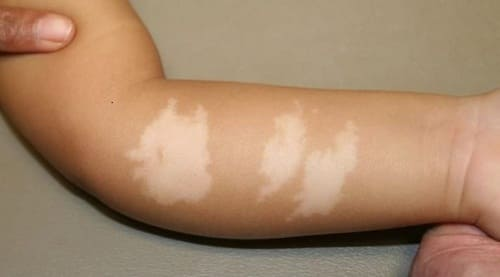
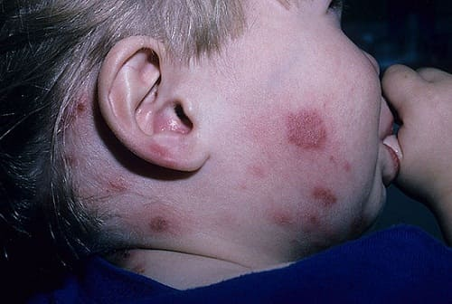

Белый лишай — распространенное кожное заболевание, которое, как правило, поражает детей возрасте от 6 до 12 лет. Дети младшего и старшего возраста также могут охватить это заболевание. У детей с белым лишаем появляются участки более светлой кожи, обычно на лице, но, когда на шее, груди и руках. Поскольку врачи не знают настоящей причины этого заболевания, принято считать его разновидностью экземы . Эти пятна становятся более заметными в солнечные летние месяцы, потому что здоровые участки кожи становятся темнее, а светлые пятна пытаются того же цвета. Может быть можно увидеть светлые участки, пока вы не подойдете близко, особенно у детей со светлой кожей. Они не сопровождаются зудом или болью.
ДИАГНОСТИКА
Ваш врач обычно может диагнозировать это заболевание по классическому внешнему признаку участков беловатой кожи. Тем не менее существует похожее кожное заболевание, званное грибком, известным как разноцветный лишай. Ваш врач может отличить два этих вида, собрав небольшой соскоб светлого участка, затем положив его на предметное стекло со специальной жидкостью и изучив его под микроскопом. Если причиной этого является разноцветный лишай, будет виден грибок.

ЧТО ДЕЛАТЬ
Лечение практически никогда не требуется, поскольку это заболевание постепенно проходит само по себе. Для полного исчезновения белых участков может потребоваться несколько месяцев. Ежедневное увлажнение может поспособствовать более быстрому выздоровлению. Можно использовать гидрокортизон или подобные стероидные кремы, тем не менее обычно это не рекомендуется, если только у вашего ребенка не сложный случай. Нельзя наносить эти кремы дольше двух недель, если только ваш врач не советует иначе.
СОВЕТ ДОКТОРОВ СИРС: БОЛЬШИНСТВО УМЕРЕННЫХ СЫПЕЙ - БЕЗОБИДНЫ Если сыпь не вызывает зуд, не сочиться и не распространяется, не волнуйтесь! |
Здоровье ребенка от докторов Сирс / Сирс У. и др.